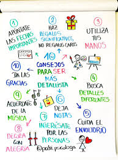

Perfil- Habilidades Duras
Programación
He creado de manera semiprofesional pequeños proyectos de sitios web, principalmente sobre cosas que me apasionan con el fin de mejorar por mi mismo mis habilidades en el desarrollo web, no soy un profesional pero por algo se inicia.

Diseño
Se ha resaltado que tengo una imaginación que siempre se llega a expresar pero puede llegar a tropezar si no tengo las habilidades requeridas para plasmar, pero en papel puedo llegar a realizar diseños atractivos y llenos de creatividad y funcionalidad.

Idiomas
Actualmente soy un parlante de inglés el nivel intermedio, puedo llevar conversaciones simples y conocer el contexto de lo que me hablan siempre y cuando sea algo informal, ya que el inglés técnico suelo fallar y no comprender, pero tengo los justo.
Perfil- Habilidades Blandas
Dibujo
No soy un experto en el dibujo realista, pero tengo las habilidades justas para llegar a plasmar lo que pienso , esto llega a facilitarme el diseño de mis ideas al momento de plasmar proyectos, pero con anticipo para una gran planificación.
Trabajar bajo estres
En momentos estrictos cuando un trabajo debe ser entregado en tiempo y forma llegó a concentrarse y lograr terminar el trabajo como se amerita, pero preferentemente intentó evitar esos escenarios que propician a errores y saturación, de ahí mi siguiente punto
Ser detallista
Me gusta plantear mis proyectos y tener un control sobre estos para agregar los detalles necesarios para no cometer errores , me gusta agregar todo lo que esté dentro de mis posibilidades y límites en mis conocimientos , pero intento hacer lo mejor que puedo.
